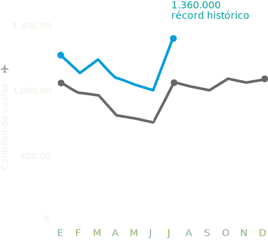
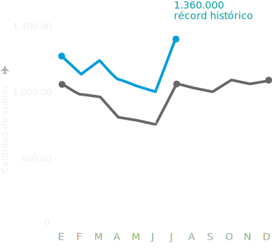
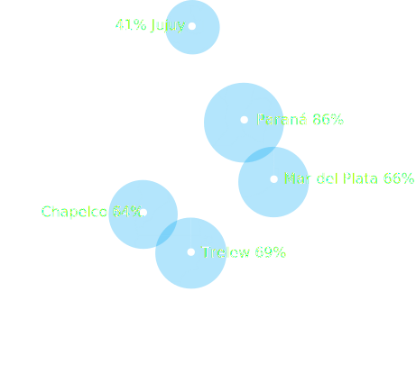

Los argentinos más conectados
El sector aerocomercial continúa creciendo y uniendo a los
argentinos.
Mirá cómo fueron todos los vuelos del año.
Rutas aéreas de Argentina
Durante el mes de julio de 2018 viajaron 1.359.907 pasajeros en
vuelos
de cabotaje, un 13% más que el mismo mes del año anterior.
 


Aeropuertos que más crecieron
Estos son los cinco aeropuertos que más crecieron en cantidad de pasajeros entre
ago-17 y ago-18, respecto de igual período
anterior.
Conectamos el país para unir a los argentinos
Se incorporaron nuevas rutas aéreas para mejorar la conectividad dentro del país de
una manera federal, sin necesidad de
pasar por Buenos Aires.
Nuevas rutas aéreas
Rutas aéreas hasta 2016
Nuevas rutas aéreas
Rutas aéreas hasta 2016
No incluyen los aeropuertos del área metropolitana
de
Buenos Aires.

Nuevas conexiones hacia el mundo
Nuevas ciudades con aeropuertos internacionales para poder recibir turistas del
exterior y conocer el mundo sin necesidad
de hacer escala en Buenos Aires.
Este producto es posible gracias a los datos
EANA.
Acá podés consultar el conjunto de datos original para que puedas explorarlos
y
hacer tus propios análisis.
¿Encontraste algún error? Por favor,
escribinos.